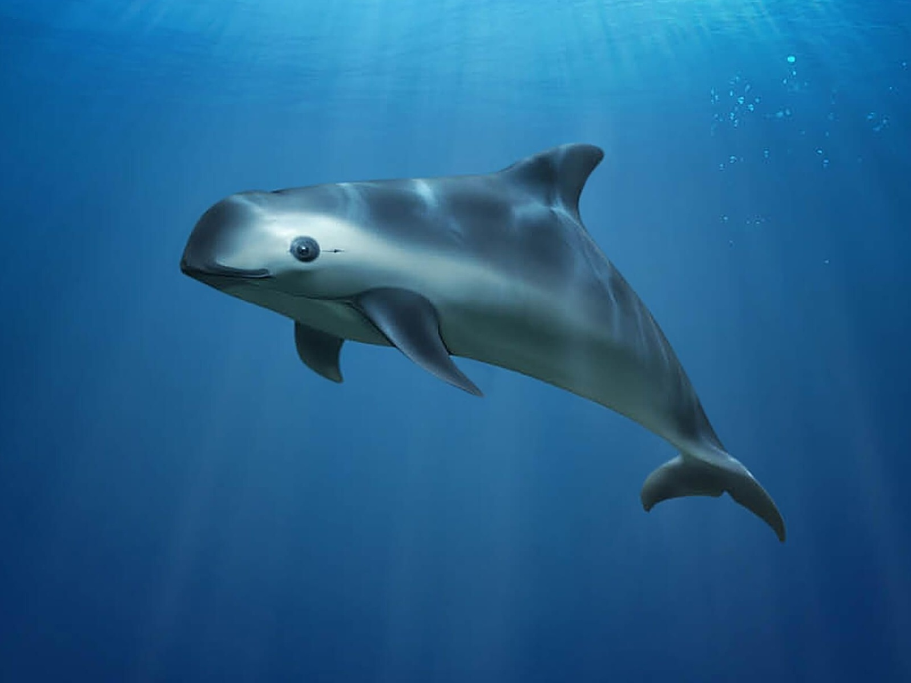
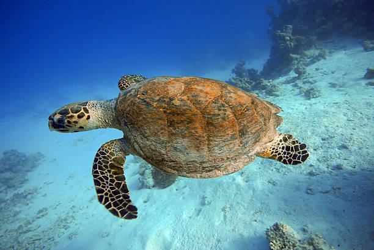
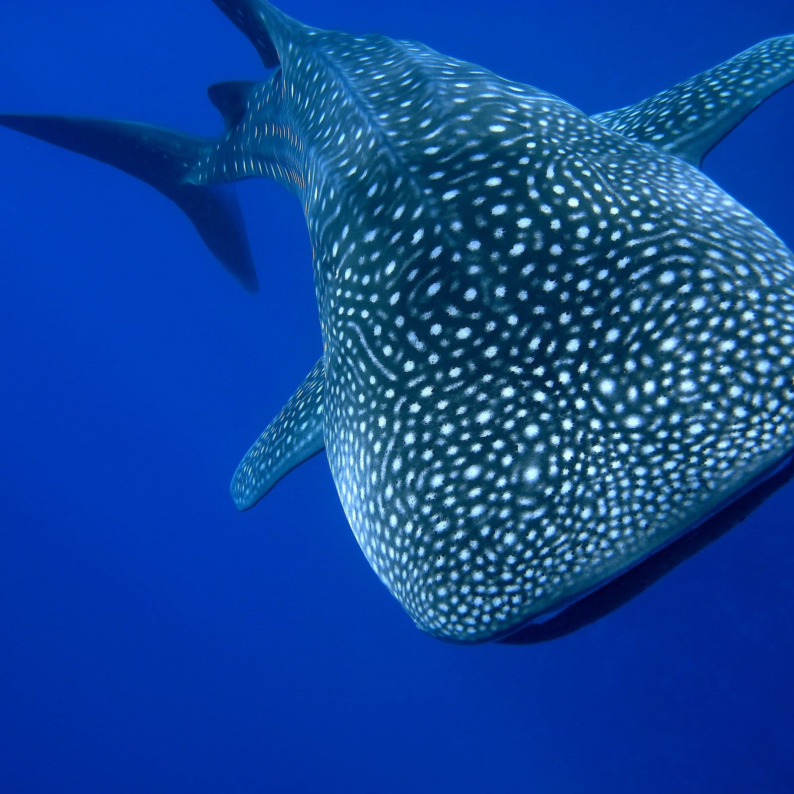
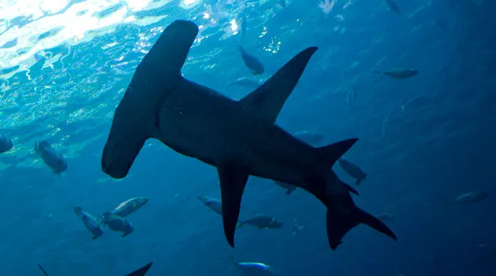
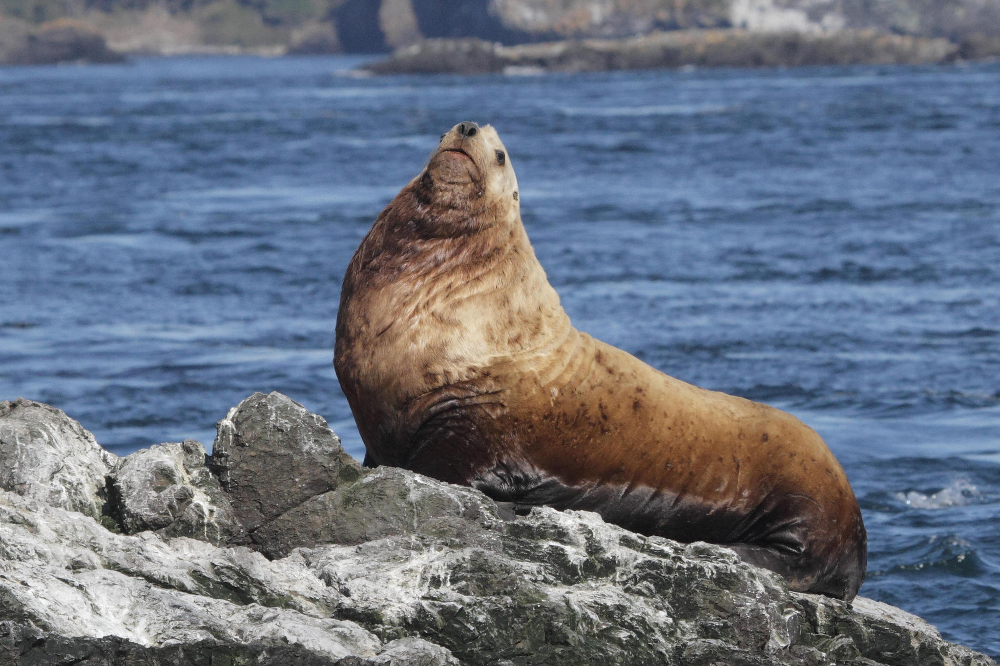

Animais marinhos em extição
Algumas espécies marinhas foram ou estão sendo instintas e um dos
principais causadores desse problema,somos nos seres humanos.
Poluição, pesca excessiva e a destruição de habitats naturais são
três das principais causas que afetam significativamente a vida dos
animais marinhos no planeta.
A seguir alguns animais que estão em instinção:
Tartaruga-de-pente
Encontrada nas regiões tropicais de todos os oceanos, golfos e mares do mundo, estima-se que a população da tartaruga-de-pente diminuiu 80% no último século por conta do intenso tráfico de sua carne e casco, além da degradação das espécies de recifes de coral das quais a tartaruga-de-pente se alimenta.
VaquitaHabitante das águas rasas da costa da Península de Baja, no México, a vaquita é o menor e mais raro cetáceo do mundo e está criticamente ameaçado de extinção.A principal ameaça à espécie é a pesca com rede que, embora proibida, é feita indiscriminadamente no Golfo da Califórnia.
Baleia-azul
O título de maior mamífero vivo da Terra pertence às baleias-azuis.Infelizmente, a caça excessiva resultou em uma diminuição drástica de sua população e agora representa uma ameaça à sua existência, embora uma proibição internacional tenha sido constituída em 1966.
Tartaruga-de-kempÉ a menor e mais rara tartaruga dos oceanos e está criticamente ameaçada de extinção. Encontrada principalmente no Golfo do México, ela também pode migrar para o Oceano Atlântico e volta apenas para botar ovos. Infelizmente a perda de habitat, a poluição marinha e o enredamento ameaçam a espécie.
Tubarão-baleiaOs tubarões-baleia são os maiores peixes do oceano, podendo chegar a até 18 m de comprimento, pesar até 19 toneladas e viver de 70 a 130 anos. Desde 2016, o animal foi classificado como ameaçado de extinção por conta principalmente da pesca comercial e da caça ilegal, que visa sua carne, barbatanas e óleo.
tubarão-marteloHabitante das regiões tropicais, o tubarão-martelo recebeu o nome por causa do formato de sua cabeça. Ele pode chegar a ter 60 m de comprimento e até 580 kg de peso. Conhecidos como caçadores agressivos, esses animais se alimentam de peixes menores, lulas, crustáceos e polvos.
Leão-marinho-de-stellerA espécie encontrada nas frias águas costeiras do Pacífico Norte,Sua população diminuiu mais de 60% devido a ameaças naturais e humanas desde a década de 1960. A predação por orcas e a pesca por conta de sua carne, óleo, couros e outro subprodutos tornam a existência do animal vulnerável.
Baleia-comum
A baleia-comum é o segundo maior mamífero do planeta, com um comprimento máximo de 26 m e 114 toneladas. Como todas as outras espécies do tipo, ela também vem sendo vítima da caça por um longo tempo, deixando-a em perigo de extinção.